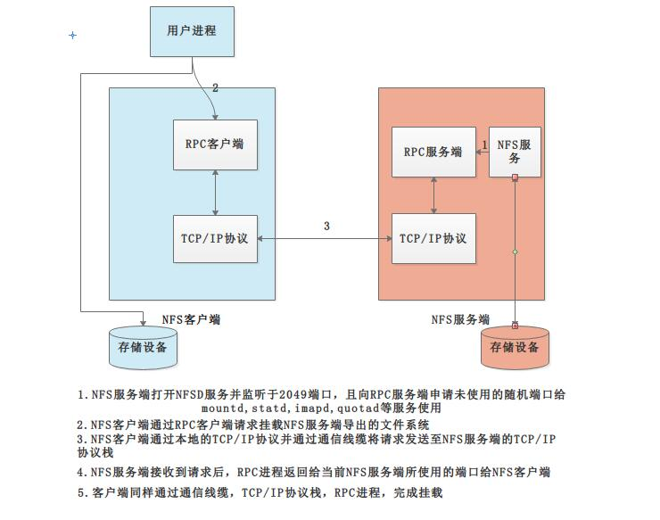

NFS
NFS基于远程过程调用（Remote Procedure Call Protocol)的一种网络文件系统，通过使用NFS，用户和程序可以像访问本地文件一样访问远端系统上的文件
管理软件包：nfs-utils
默认端口：其它端口由portmap(111)随机分配，nfsd(2049)
配置文件：/etc/exports /etc/exports.d/*.exports
CentOS7不支持同一目录同时用nfs和samba共享，因为使用锁机制不同 相关软件包:rpcbind（必须），tcp_wrappers
CentOS6开始portmap进程由rpcbind代替
NFS服务主要进程：
rpc.nfsd 最主要的NFS进程，管理客户端是否可登录
rpc.mountd 挂载和卸载NFS文件系统，包括权限管理
rpc.lockd 非必要，管理文件锁，避免同时写出错
rpc.statd 非必要，检查文件一致性，可修复文件
日志：/var/lib/nfs/
工作原理

配置NFS
如系统没有，则需要使用yum install nfs-utils安装，之后使用systemctl start nfs-server启动
/etc/exports导出文件系统的格式
/DIR HOST1(opt1,opt2) HOST2(opt1,opt2)...
HOST1支持通配符，网络地址
opt:
ro：只读
rw：读写
sync：同步，数据请求时立即写入磁盘
async：异步，数据不立即写入磁盘
all_squash：将所有远程用户包括root用户都压缩成nfsnobody
root_squash：将远程root用户压缩成nfsnobody
no_root_squash：不压缩远程root用户
anonuid和anongid：指定匿名用户映射为指定用户UID和组GID，一般配合all_squash使用
NFS常用命令
rpcinfo -p hostname：查看指定主机的rpc注册信息
rpcinfo -s hostname：查看RPC注册的程序
exportfs
-v 查看北极所有NFS共享
-r 重读配置文件，并共享目录
-a 输出本机所有共享
-au 停止本机所有共享
showmount -e hostname：查看指定服务器的共享信息
NFS的挂载
mount -t nfs -o[option] IP:/SHARE /MOUNTPIONT
[option]
fg：前台挂载
bg：后台挂载
hard：持续请求
soft：非持续请求
rsize、wsize：一次读和写数据的最大字节数
_netdev：无网络不挂载
nosuid：没有suid权限
nodev：设备文件不可用
noexec：不能运行可执行二进制文件
自动挂载
由autofs服务提供，将/etc/auto.master文件的匹配的文件自动挂载至指定的目录
支持含通配符的目录名
* server:/export/& 挂在目录与共享目录名称相同
示例：
/etc/auot.master
/- /etc/auto.direct
/test /etc/auto.test
/etc/auot.test
/abc server:/PATH
/etc/auto.direct
/user/local/ server1:/usr/local
实验：实现NFS伪根
配置NFS服务器
vim /etc/fstab
/data/read /exports/read none bind 0 0
/data2/write /exports/write none bind 0 0
vim /etc/exports
/exports *(fsid=0,ro,crossmnt)
/exports/read 192.168.0.0/24(ro)
/exports/write 192.168.0.0/24(rw)
配置NFS客户端
mount nfsserver:/ /mnt/nfs
vim /etc/fstab
nfsserver:/ /mnt/ nfs4 ro 0 0